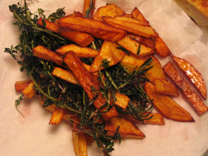

Cesare Casella's Tuscan fries
I made french fries for the first time tonight. Actually, Tuscan fries, in the manner of Cesare Casella. Jeffrey Steingarten gave me the recipe in the book I just finished, and I think I’ll just make them every night from now until I’m dead.

What’s unique about these fries—at least to me—is that all of the herbs are fried in the oil with the potatoes, as are the salt and pepper. Mommy says that everyone is frying sage leaves these days, but this was the first time I’d seen it. The result is so addictively delicious: crispy, salty, oily but in a good way. n8 and I sat around them and cleaned the plate of all but the herb stems.
To make these Tuscan fries, get a few big potatoes (I used, and strongly recommend, Yukon Gold). Heat at least one inch of peanut or vegetable oil (enough to completely cover the potatoes) to 360ºF (a deep-fry thermometer is indispensable here. I know that because I just got mine yesterday, and all of my frying experiments up to now have been utter failures). Add the potatoes all at once, and watch the temperature drop by about 100º. Stir those bad boys. After a few minutes, add a few garlic cloves and a couple sprigs of rosemary, and keep stirring. A few minutes later, add a bunch of thyme, oregano, and sage, stirring all the while. Add one or two tablespoons of sea salt. After 9 or 10 minutes, when the fries are good and golden, take one out and taste it. If the outside is crisp and the inside creamy, they are done. Grind in a bunch of black pepper and remove the fries and herbs with your skimmer or a slotted spoon. Place them on paper towels or in a slow oven if you plan to make more. I added extra Maldon and pepper once I took them out.
A few turns of the parmesan cheese grinder wouldn’t be amiss here either, come to think of it.
It seems so decadent having four different kinds of fresh herbs in the house, what with the cost, but I try to follow recipes to the letter the first time I try them. In the future I may just use rosemary and thyme, or rosemary and sage. Oregano isn’t too strong in flavor, although it is pretty to look at.
This wasn’t all we had for dinner, by the way. I also pan-roasted a giant split chicken breast and served it with an excellent tart sauce from Cook’s Illustrated made of red wine, red wine vinegar, chicken broth, butter, and a minced shallot. (Ok, so I used onion. Do you have shallots on hand all the time?)
Comments
Well, aren’t we in the know.
(It was all so good, I’m going to cry.)
Glad to see Steingarten’s recipe worked- I had read his book awhile back and was curious about the recipe.
It’s the first recipe of his I’ve tried. His style of writing them is so unique—they read more like short stories than recipes. Anyway this one worked out excellently!
Add a comment